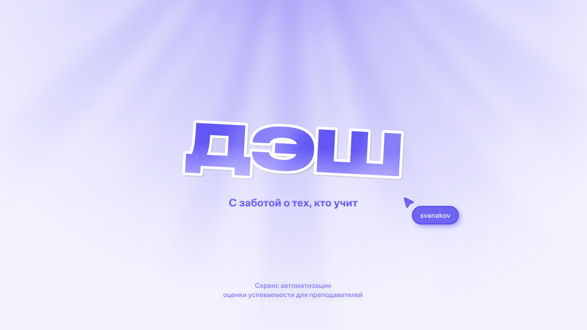
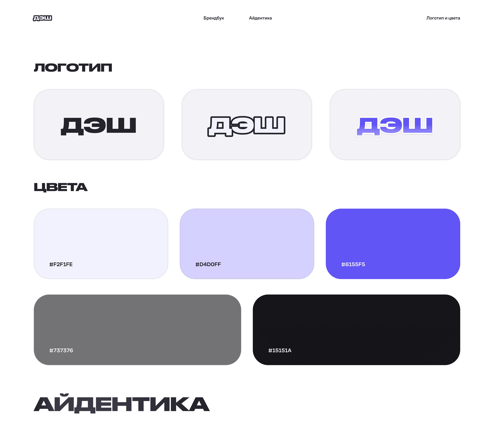
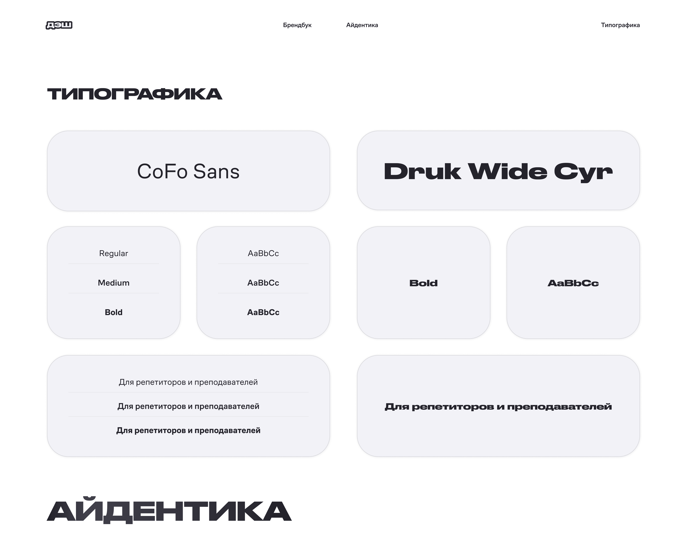
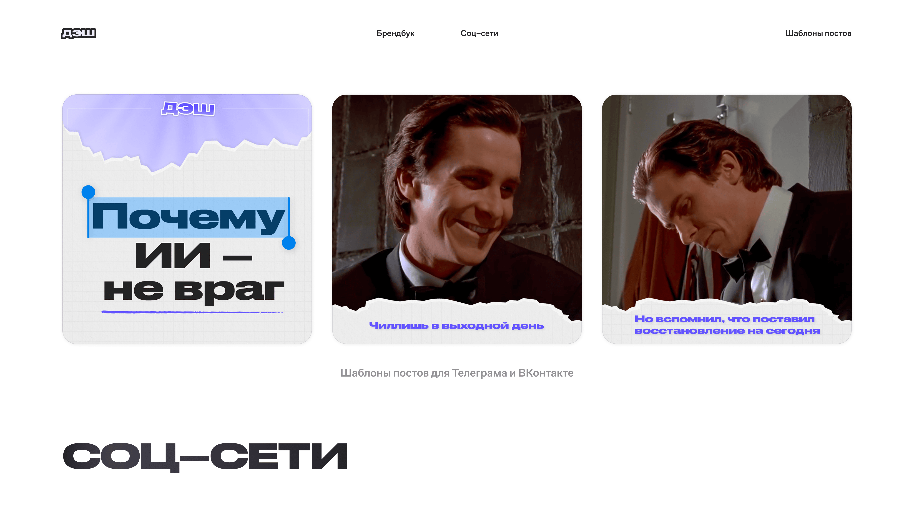

Дэш
Фирменный стиль и интерфейс для EdTech-сервиса автодиагностики знаний

Брендинг и интерфейс для EdTech-сервиса
Дэш– сервис для преподавателей и репетиторов, который генерирует тесты по загруженным материалам и проверяет ответы студентов.
Задача: разработать фирменный стиль и спроектировать интерфейс под определенные сценарии.
Что я сделал: брендбук (логотип, цвета, типографика, tone of voice), веб-интерфейс по конкретным сценариям с двумя пользовательскими путями, визуальные коммуникации для соцсетей и рекламы.
Два пользователя, две разные задачи
Сервис обслуживает два типа пользователей, и их потребности почти не пересекаются, интерфейс должен быть разным для каждого.
Преподаватель
Хочет быстро создать тест по своим материалам и получить результаты без ручной проверки. Главный барьер: непонятно с чего начать, страх что ИИ сгенерирует плохие вопросы
Студент
Студент получает ссылку, вводит имя и сразу проходит тест. После завершения – дашборд с ключевой информацией.
Преподаватель
Студент
Система, которая работает везде


Заказчик дал цвета и шрифты – задача была выстроить из этого систему которая работает везде. Фиолетовый акцент хорошо считывается в EdTech-контексте и при этом даёт продукту характер. Druk Wide Cyr держит заголовки узнаваемыми, CoFo Sans обеспечивает читаемость в интерфейсе.
Сценарий: тест со стороны ученика
Один из трёх задизайненных сценариев – путь студента от получения ссылки до сдачи теста. Никакой регистрации, минимум лишнего, фокус на самом тесте.
Посты и реклама

Два формата для соцсетей – контентный и мемный. Оба узнаваемы как Дэш даже без логотипа. Критерий: чтобы любой новый материал можно было сделать в этом стиле без меня.
Что понял и что хочу прокачать
В этом проекте я впервые работал над разными частями продукта – от брендбука до интерфейса и коммуникаций. Понял, что сложно держать систему цельной, когда она расползается в разные форматы.
Что хочу прокачать по итогу: графическую часть. Думаю, что визуальные коммуникации можно было сделать смелее – более креативно и нестандартно подойти к ним. Сейчас посты держатся в рамках системы, но не выбиваются из общего потока в ленте.